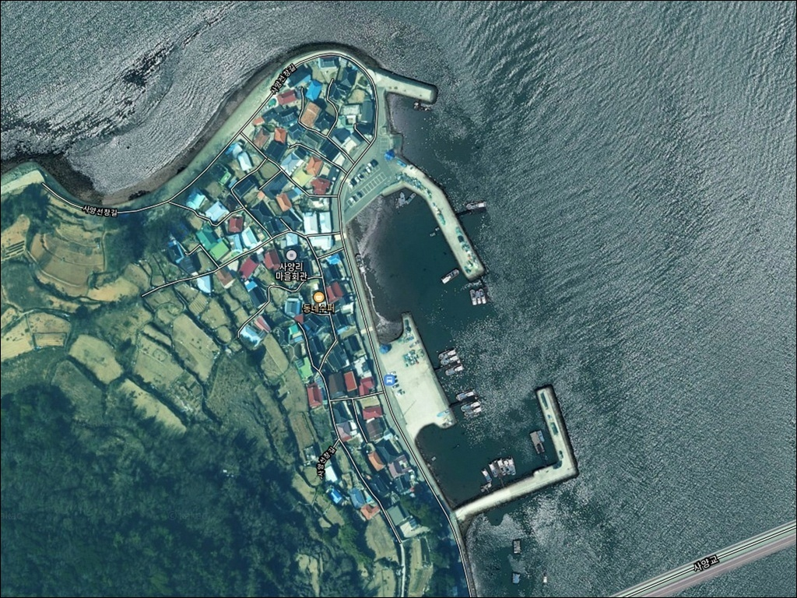
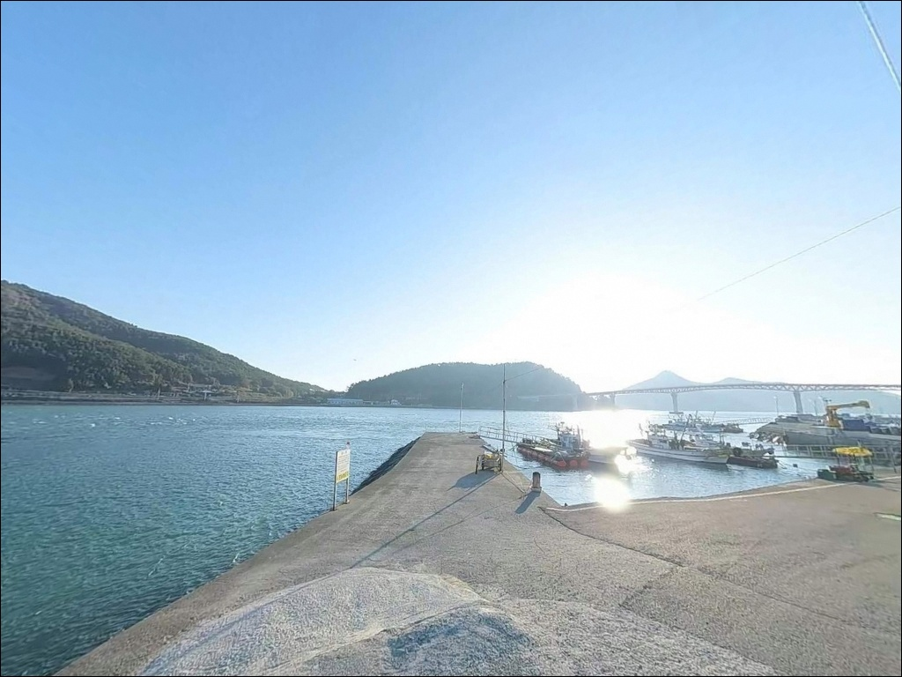
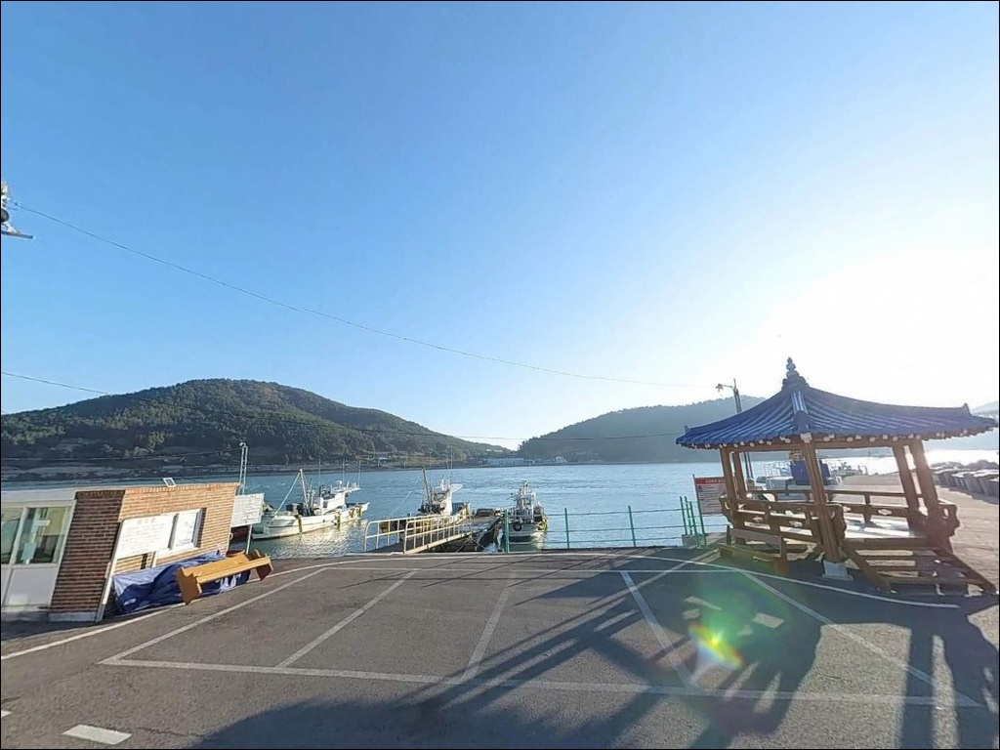
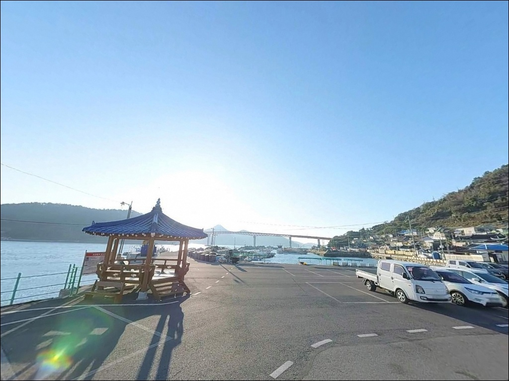
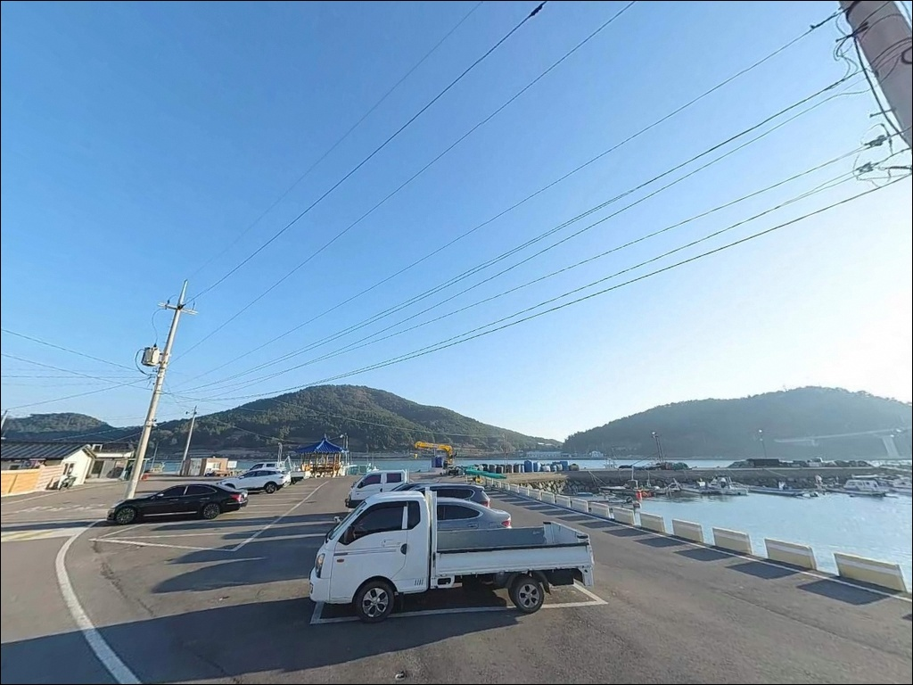
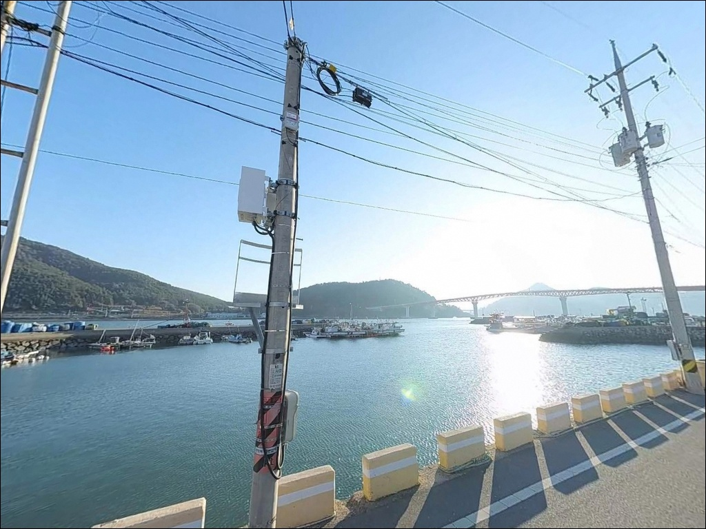
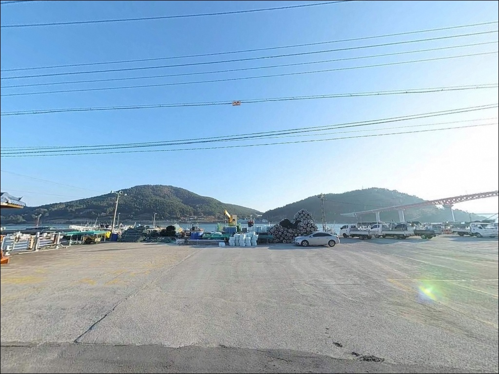
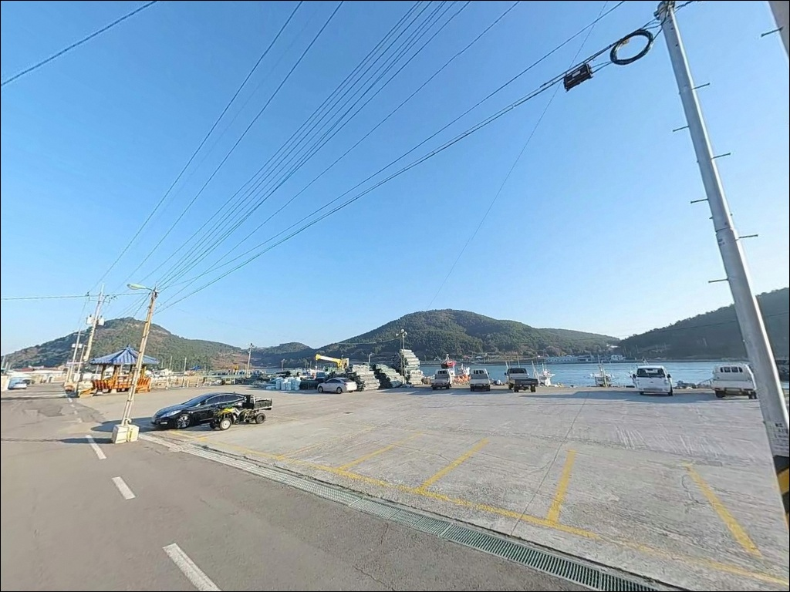
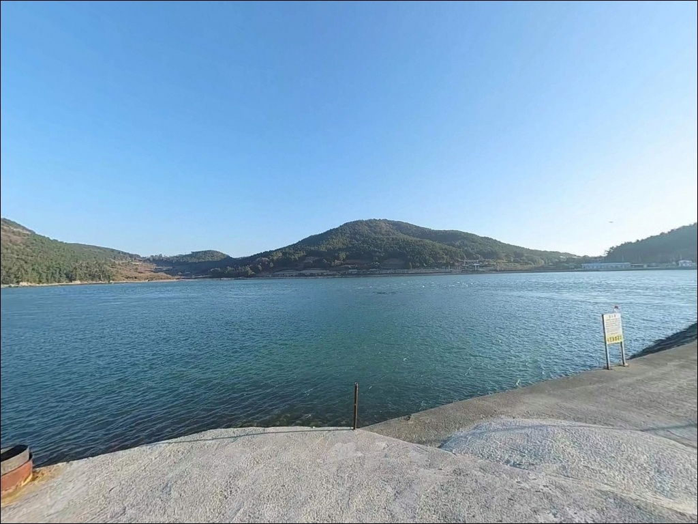

중들물 전에 들어가면 채비 다 휩쓸리는 고흥 사양리방파제 찌낚시
이 페이지에는 광고(제휴 링크 포함)가 있으며, 광고 링크를 통해 구매하면 운영자가 판매 수익 또는 수수료를 받을 수 있습니다. 포인트 사진: 카카오맵 스카이뷰·로드뷰. 이 페이지의 지도·사진 이미지는 카카오맵의 실제 서비스 이미지와 다를 수 있습니다.


포인트 안내
사양리방파제
전남 고흥군 봉래면 사양리 166-13
사양대교를 건너 방파제에 도착하더라도
물때를 맞추지 않으면 조류가 너무 강해
어떤 채비를 써도 흘림을 제어하기가 어렵습니다.
중들물 이후 조류가 살아날 때를 기준으로
출발 시각을 계산하는 것이
이 포인트 진입의 첫 번째 판단 기준입니다.
이 글은 사양리방파제의 진입 환경,
지형 분석, 낚시 방식별 공략 조건,
차박 여건에 집중합니다.
조황 단정이나 특정 어종 보장은
이 글의 범위에 포함되지 않습니다.

1. 사양대교와 방파제까지의 진입 동선
사양도는 사양대교 개통으로
육로 차량 진입이 가능한 섬입니다.
마을 진입로와 선착장 연결 도로가
포장 상태로 이어져 있어
승용차와 소형 SUV 기준으로는
진입 자체에 큰 어려움은 없는 편입니다.
방파제 입구와 배후 부지에는
넓은 콘크리트 공터가 확보되어 있어
대형 차량의 회차도 무난한 수준입니다.
주차는 선착장 옆 공터와
방파제 초입 콘크리트 공간,
마을 진입 전 공터를 분산 활용하며
차량 2~5대 수준 수용이 가능한 구조입니다.
방파제 중간 구간은 폭이 제한적이므로
차량은 방파제 진입부나 선착장 인근 공터에
세워 두고 도보로 이동하는 방식이 안전합니다.
어선 이동 동선을 막지 않는 자리를
우선으로 골라야 합니다.

2. 차박 환경과 야간 체류 여건
사양도는 마을 규모가 작은 어촌 섬입니다.
야간 차량 통행이 거의 없고
인가 밀도도 낮아
정숙성은 상대적으로 양호한 편입니다.
선착장과 방파제 초입에는 가로등이 설치되어
기본적인 시야 확보가 됩니다.
방파제 끝단과 외항 석축 구간은
야간 조명이 상대적으로 부족한 구간입니다.
낚시를 마치고 방파제 초입 공터에서
하룻밤 머무는 용도로는
크게 불편하지 않은 환경이지만,
바람 방향과 세기는 기상 예보로 사전에 확인해야 합니다.
사양도는 다도해해상국립공원
나로도지구 경계와 겹칠 가능성이 있습니다.
국립공원 구역 내 지정 외 장소에서는
야영·취사가 원칙적으로 허용되지 않으므로,
출발 전 관할 기관 확인이 먼저입니다.


3. 주변 편의시설 및 인프라 현황
사양리방파제 반경 내에는
편의점이나 식당을 기대하기 어렵습니다.
사양대교를 건너 봉래면 방향으로 이동하면
기본 편의시설 접근이 가능하며,
완전 자급 체제로 출발하는 것이
현실적인 준비 방식입니다.
나로도항은 사양리방파제에서
차량으로 약 15분 거리에 위치합니다.
대형 마트, 수산시장, 식당, 주유소 등
필요한 인프라 대부분이 이곳에 집중되어 있어
부족한 소품이나 먹거리가 있다면
나로도항을 거점으로 활용하는 편이 효율적입니다.
나로도항 인근에는 낚시용품점도 운영 중이어서
미끼와 채비 현지 조달도 가능합니다.
응급 상황 발생에 대비해
연료·비상약품·식수는 출발 전에
충분히 갖추고 진입하는 것이 기본입니다.

4. 진입 전에 반드시 챙겨야 할 준비사항
사양리방파제 방문 전
가장 먼저 확인할 것은 물때입니다.
사양도와 해창만 사이 수로에서 형성되는
물골 조류는 사리 전후에 강해지며,
채비 컨트롤이 어려운 수준까지 세집니다.
바다타임에서 봉래면 기준 물때를 확인하고
중들물 이후 만조 전후를 집중해서
출발 시각을 계산하는 것이 기본 전략입니다.
섬 지역 특성상 기상 변화가 빠른 편입니다.
기상청 예보를 당일 아침에 한 번 더 확인하고,
풍속과 파고 수치가 높다면
출조 자체를 재검토하는 것이 안전합니다.
외항 석축 구간은 파도와 이끼로
미끄러운 구간이 있으므로
미끄럼 방지 신발과 구명조끼는 필수입니다.
어선 입출항이 이뤄지는 선착장 구간이므로
선박 항로 방향 캐스팅은 자제하고,
어민 작업 공간과 어구 적재 장소를
침범하지 않는 것이 기본 매너입니다.
야간에는 헤드랜턴을 반드시 챙겨야 합니다.

5. 외항 테트라포트가 만드는 낚시 지형
사양리방파제는 ㄱ자 형태로
외항 쪽에 테트라포트가 설치되어 있고,
내항은 석축과 콘크리트 직벽 구조입니다.
방파제 끝단 기준 만조 시 수심은
6~8m 내외로 일정한 편이며,
사양도와 해창만 사이 물골 영향으로
조류 흐름이 방파제 외항 측에 꾸준히 형성됩니다.
외항 테트라포트 구간은
바닥 굴곡과 은신처가 함께 만들어져
두족류 서식 조건이 갖춰진 지형입니다.
방파제 끝단에서는 수심 급변 구간이 형성되고,
방파제 측면은 조류 흐름을 타는
루어와 찌낚시 라인이 동시에 형성되는 구조입니다.
방파제 외항 테트라포트 구간은
조류와 은신처 조건이 겹쳐
찌낚시와 에깅 모두에 유효한 자리입니다.
중들물 이후 조류가 살아나는 타이밍부터
입질 확률이 올라오는 편이어서,
입장 시각을 물때 기준으로
미리 계산하고 출발하는 것이 중요합니다.
최신 조황은 출조 전 "고흥 봉래면 조황"
또는 "사양도 방파제 낚시"로 검색해 보시기 바랍니다.


6. 지형에 어울리는 낚시 스타일
이 방파제에서 먼저 시도해볼 방식은
외항 테트라포트 구간을 노리는
전유동·반유동 찌낚시입니다.
물골 조류가 활발한 타이밍에
감성돔과 숭어를 대상으로
테트라 경계 라인을 따라 흘리는 방식이
이 포인트 지형 조건과 잘 맞습니다.
에깅도 가을 시즌에 집중해볼 만한 방식입니다.
테트라포트와 암반이 혼합된 외항 지형은
갑오징어 서식 조건을 갖추고 있으며,
야간 가로등 주변에서는
볼락과 전갱이를 겨냥한
미노우·웜 소형 루어 라이트게임도
어울리는 선택입니다.
원투낚시는 방파제 끝단에서
먼바다 방향으로 투척하는 방식으로
도다리와 노래미, 야간 붕장어를
기대해볼 수 있습니다.
조류가 흐르는 구간에서는
봉돌 호수를 충분히 확보해야
채비가 제 위치를 유지합니다.

7. 대안 포인트와 플랜 B 동선
사양리방파제 조류가 너무 강하거나
공터 주차 여건이 여의치 않을 때는
나로도항 방파제가 첫 번째 대안입니다.
규모가 크고 편의시설이 우수하며
수심 10m 안팎으로 일정하고 안정적인
낚시 환경을 갖추고 있습니다.
처음 이 권역을 찾는 낚시인이라면
나로도항을 기점으로 삼고
사양리방파제를 병행 탐색하는 동선이 효율적입니다.
외나로도 남서쪽의 염포방파제는
감성돔과 갑오징어 포인트로
알려진 곳입니다.
에깅 시즌에 나로도항과 묶어서
돌아보기 좋은 대안 포인트이며,
석축 구조로 테트라포트가 없어
발판 여건이 안정적인 편입니다.
차박 목적이라면
나로도 염포해변 주차장이
현실적인 대안입니다.
화장실과 주차 여건이 양호하고
바다와 가까운 환경이어서
사양리방파제 낚시 후
이동 거점으로 활용하기 좋습니다.

물때와 조류를 이해하면
사양리방파제가 달라 보입니다
찌낚시와 에깅을 즐기는 낚시인이라면
사양리방파제의 외항 테트라포트 지형과
물골 조류 조건은 잘 맞는 구조입니다.
사양대교 개통으로 차량 접근이 가능해졌고,
방파제 초입 공터에서 하룻밤 머무는 체류도
현실적으로 가능한 포인트가 되었습니다.
반면 물때 계산 없이 사리 전후에 진입하거나,
편의시설을 기대하고 자급 준비 없이 찾아가면
낚시보다 이동에 더 많은 시간을
소비하게 될 수 있습니다.
물때 확인, 자급 준비, 국립공원 야영 규정 확인,
이 세 가지를 갖추고 간다면
조용한 어촌 방파제의 낚시 본연을
온전히 즐길 수 있는 출조가 됩니다.
물골 조류 옆 방파제에 자리를 깔고
에기를 내리면서 조용히 하룻밤 보내는
차박 낚시 여행자라면,
국립공원 야영 가능 여부만 미리 확인해두면
낚시와 차박을 함께 즐기기 좋은
출조가 될 수 있는 곳입니다.